An AI companion that guides anyone through their own phone by glowing exactly where to tap, saying one simple step, and doing it with them, safely. Saathi — fully on-device, for elders and regional-language users (English, हिंदी, తెలుగు). Saathi Pro — adds a cloud brain for students, professionals and creators learning new apps and expert workflows.
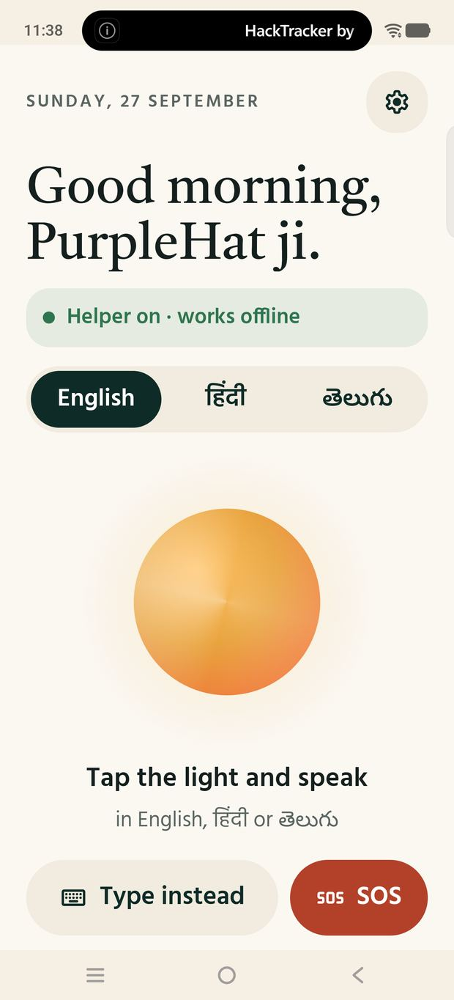
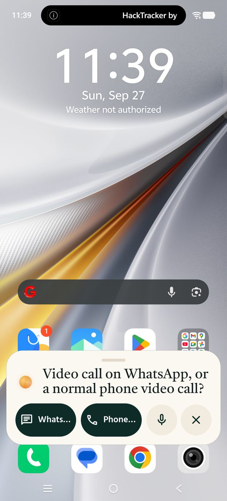
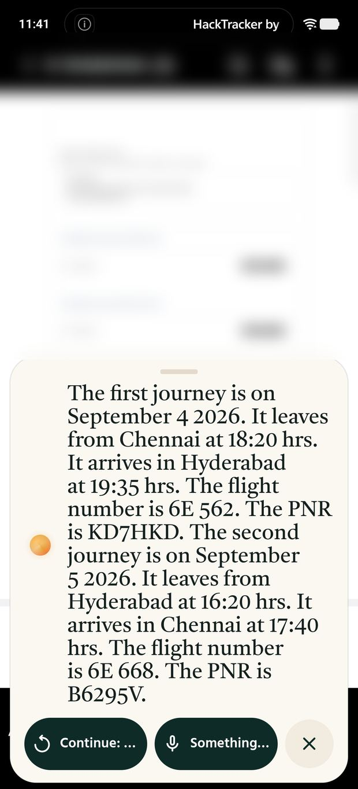
The person says what they want, the way they would ask a grandchild — “video call my son”, “find my Aadhaar and send it to him”, “Akash sent me a flight ticket, when is it?” — and Saathi walks them through it on the real app: a warm glow around the exact button, one short sentence in their language, spoken aloud, and a Do it for me button when they just want it done. The same guide scales from a grandmother’s first video call (Saathi, offline) to a developer reaching a server over SSH from the phone (Saathi Pro).
Pensions, Aadhaar, train and flight tickets, bills, doctors, family — it all lives in smartphone apps now. Yet millions of parents and grandparents were never taught how these apps work, many read their own language far better than English, and every phone brand and every update moves things around. The same wall stops a much larger group every day: students setting up coding tools, shop owners editing reels, professionals reaching a server or a spreadsheet from their phone — anyone facing an app for the first time.
A video call, sending a photo, bigger text, finding a document — each waits for a son, daughter or neighbour to be free. Asking again and again costs independence and dignity.
Menus and icons change with every update and brand. A step learned last month is somewhere else today. Almost all help is English and generic.
One wrong tap can call a stranger, delete a chat or open a popup nobody can close — so many simply stop trying.
“Share your screen”, “install this app”, “tell me the OTP”. Those least sure of their phone are the easiest to trick, and remote “help” is how most of these frauds begin.
Saathi is an Android accessibility-service overlay with a stack of on-device models. It reads the structure of whatever app is on screen (the same accessibility tree screen readers use), understands what the person wants, decides the next step and shows it on the real app — then watches the screen change and moves on. It ships as two apps from one codebase: Saathi (fully on-device, no internet permission — elders and everyday tasks) and Saathi Pro (the same guide plus a cloud model for open-ended, expert goals).
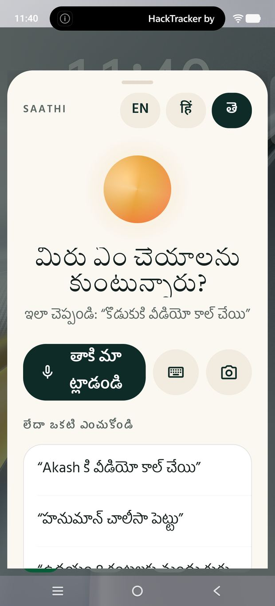
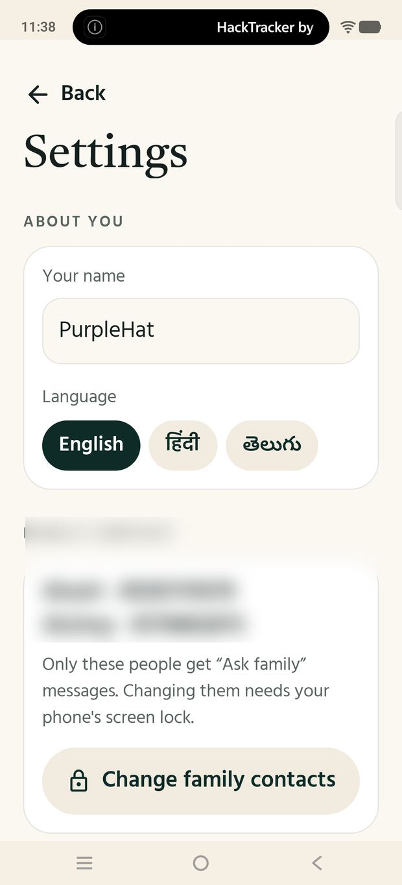
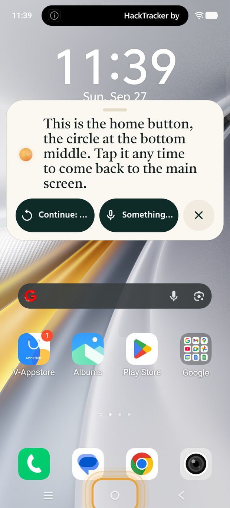
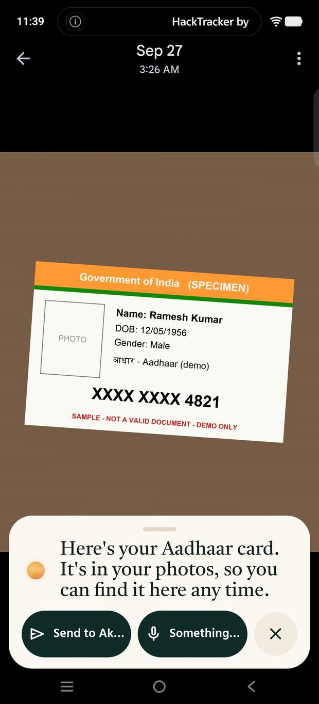
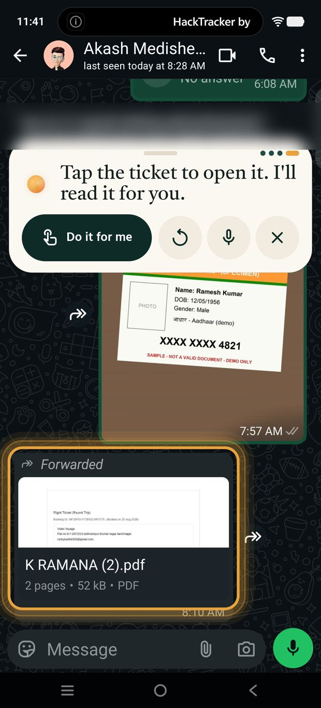
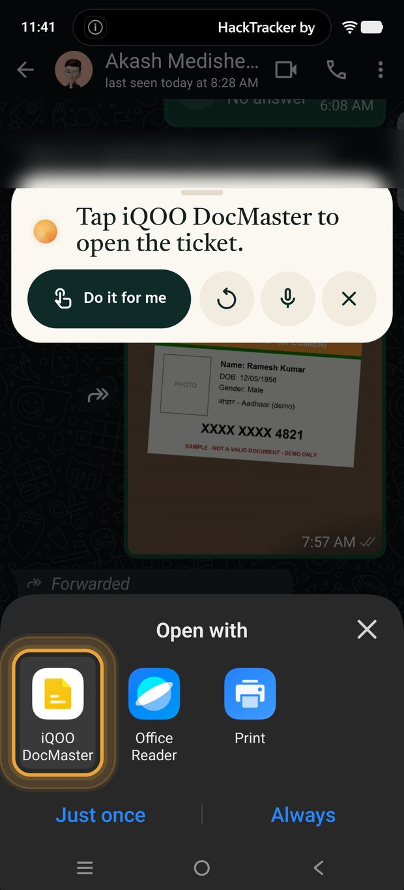
Screen capture → ML Kit OCR (~0.3 s) → text rebuilt row by row so every city keeps its own time → Gemma 4 on the GPU (~7 s): “4 Sep 2026, Chennai 18:20 → Hyderabad 19:35, 6E 562 …”. In Telugu the answer comes in Telugu.
Tickets, reports and bills arrive as PDFs in tiny print, usually in English. Now they can simply ask.
End to end on the phone — the booking is never sent to a server — and the answer is checked journey by journey, never mixed.
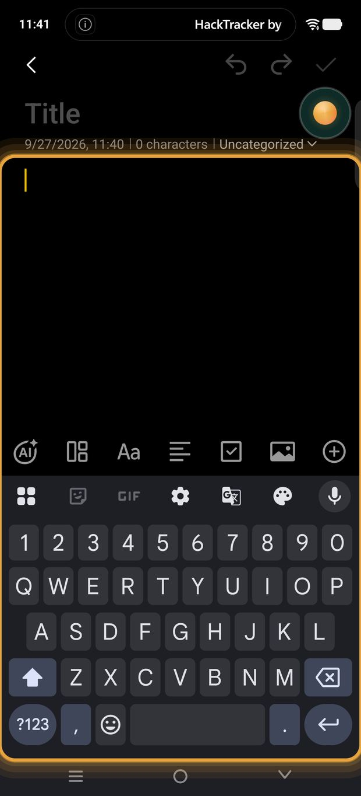
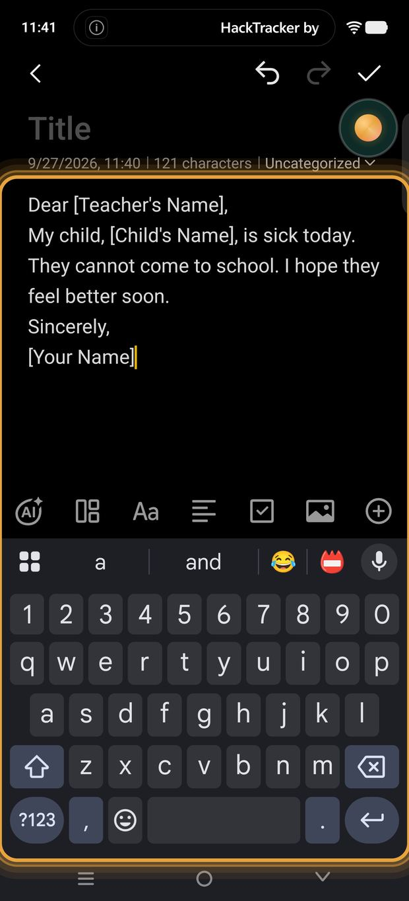
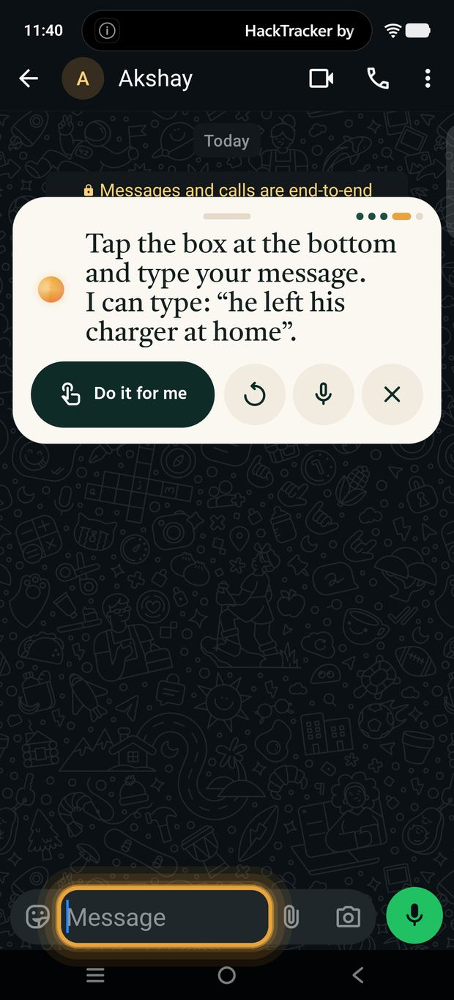
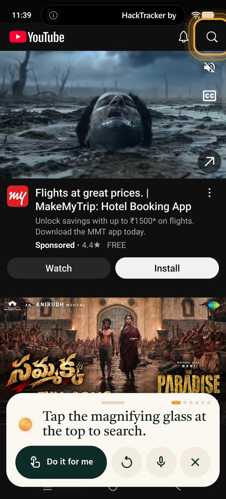
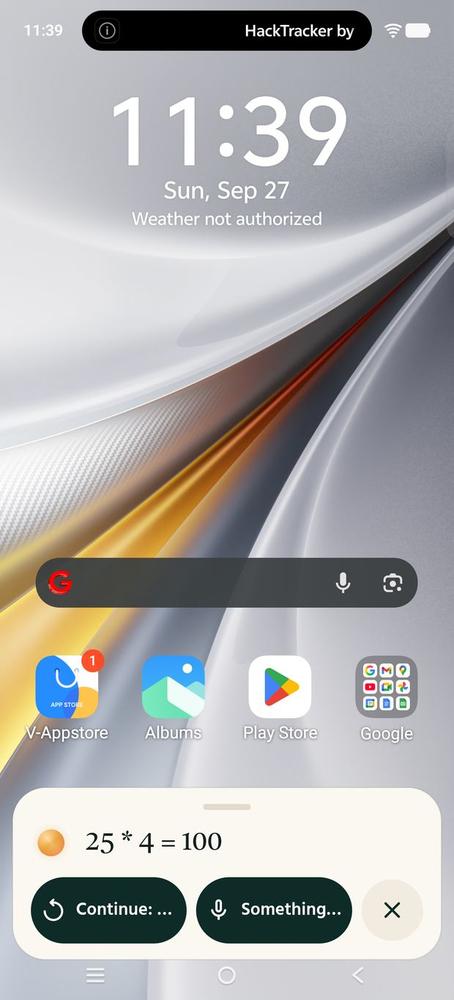
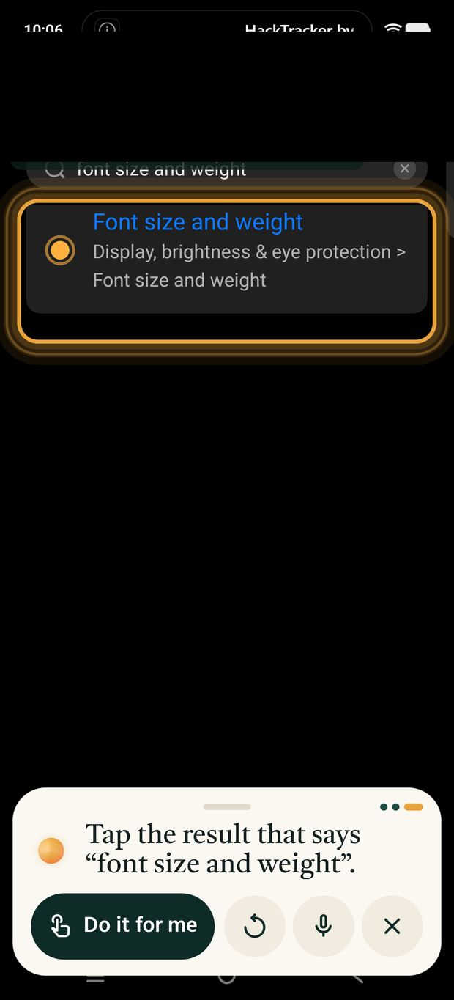
WhatsApp video/voice call, message, photo, voice note, take-a-photo-and-send, open a document, see a photo, backup, share location · YouTube search, subscriptions, history, like, share · Google Maps directions & navigation, book a cab (Maps → Uber) · Uber cab booking · Photos open latest, crop, brightness, share · Phone call · Messages read latest, block · Clock new alarm, alarm off · Camera photo, selfie · Chrome search, new tab · Instagram profile, reels, post · Play Store install, update all, uninstall · Spotify play, playlist, like, shuffle, download · JioHotstar watch · Google Docs new, open recent, save as Word · Settings ringtone, font, brightness, wallpaper, Wi-Fi, Bluetooth, dark mode, language, screen timeout, storage.
Plus 31 instant skills (torch, volume, battery, TV remote, alarms, medicine…) and the GPU planner for any other app.
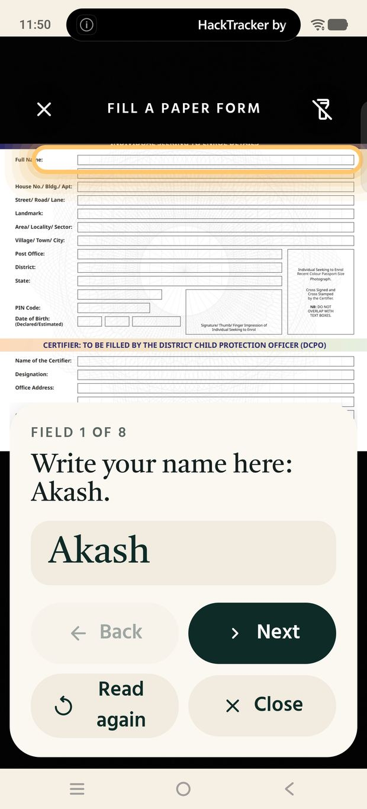
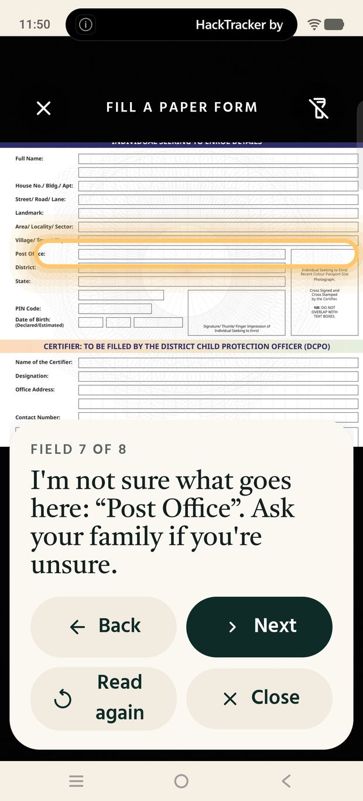
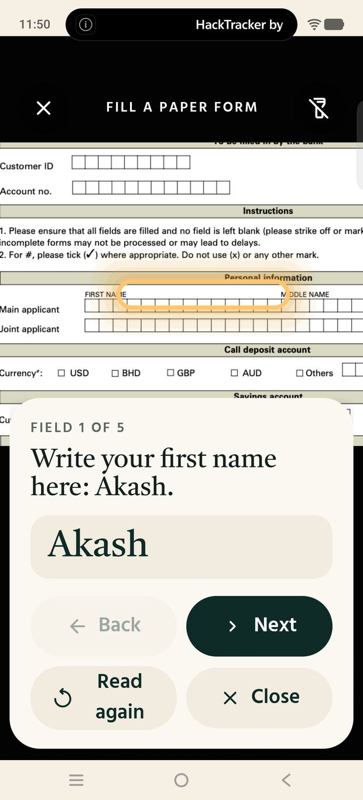
Point the camera at a paper form — or share a photo of it from the gallery or WhatsApp (“Fill this form with Saathi”). ML Kit OCR on the phone finds each label and its box, then walks one field at a time: zoomed to the box, the box glows, the card says what to write and shows it in big letters. Back / Next / Read again. Saathi never writes on the paper and nothing leaves the phone.
Sections meant for someone else are skipped by position and heading: “To be filled in by the bank”, “Certifier: to be filled by the District Child Protection Officer”, “For office use”, signatures, stamps, photo boxes. Aadhaar, PAN, bank and card boxes are never filled — the person writes those.
The answers are preset once in the app’s My details profile (opens behind the phone’s screen lock). In this demo the profile holds sample values — name “Akash”, house/street “None”, area “Neon”, city and district “Karimnagar” — “None” is itself a preset value, not an OCR mistake. Missing ones (middle name, post office) are said plainly, never guessed.
On any form inside an app or web page, “help me fill this form” walks the editable fields in reading order, glows each and offers to type the saved value. Password, OTP and PIN fields are recognised and never filled.
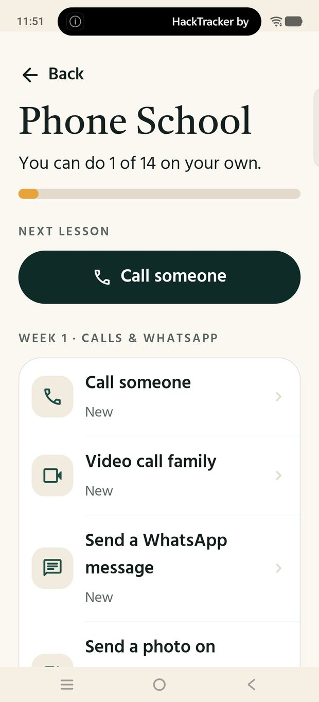
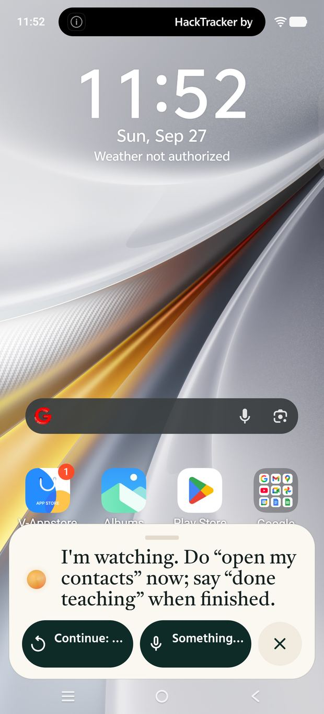
Each skill is tracked: new → practising → “You can do this!”. After three successes Saathi lets the person try first and only glows if they get stuck — teaching, not replacing.
Saathi records the taps and safe typed values of a task shown once (“watch me open the school app”) and saves it as a lesson, replayed later with glows, step by step, by name and by voice.
“How do I use Spotify / Google Docs?” gives guided first steps on the real app. For apps no one mapped, Gemma 4 plans each step from what is on screen, with drift checks (“where am I?”).
How the “model learns”: models are not retrained on the phone. Saathi learns by storing lessons, labels and progress in private on-device memory; the models receive that memory as context, so the same Gemma plans better on this person’s phone the more it is used.
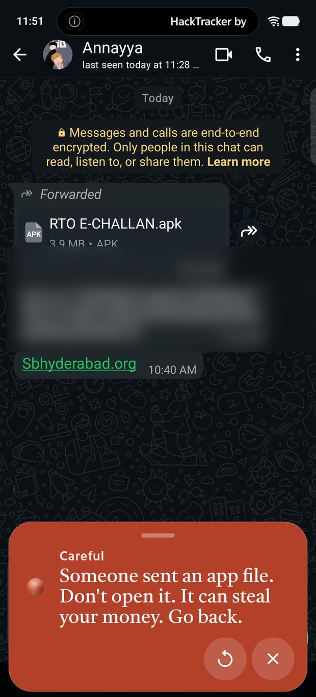
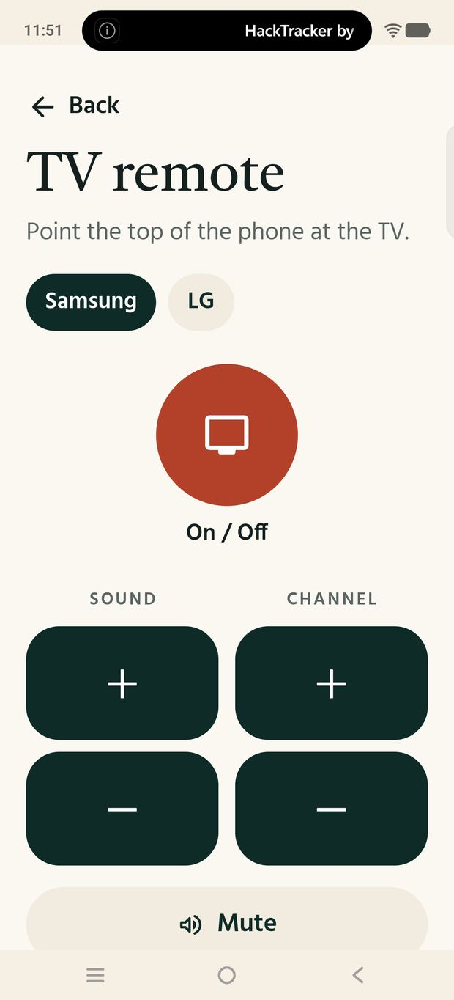
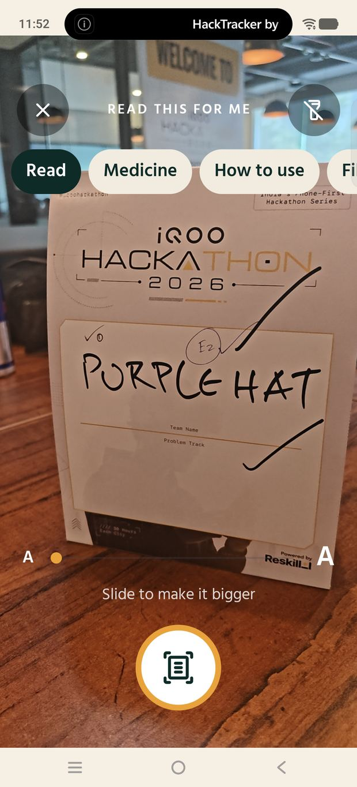
“Help!”, “बचाओ”, “కాపాడండి” → one screen: call family, call 112, prefill “I need help”.
Prefills a message to the registered family contact only; redacted; the person presses send; no remote control ever.
“Every morning at 7 play Hanuman Chalisa”, medicine reminders — spoken, confirmed with Yes, re-armed after reboot. Battery-aware: under 15% it skips the big model.
The elderly aren’t the only people lost in apps. A student setting up coding tools, a shop owner editing a reel, a professional reaching a server from the phone — all need the same thing: someone to show them where to tap. Saathi Pro is a second, separate app that keeps the same glow-and-guide experience and adds a cloud brain for open-ended, expert tasks.
| Saathi (basic) | Saathi Pro | |
|---|---|---|
| Who | Elders, first-time and regional-language users | Students, professionals, creators, small businesses — anyone learning a new app or workflow |
| Brains | Fully on-device: NPU Gemma 3 1B, GPU Gemma 4 E4B, ML Kit OCR, app maps | Everything in basic, plus a fast cloud model via OpenRouter (Gemini Flash-class, with fallbacks) |
| Internet | None — the app has no internet permission | Only this app has it; the person enters their own key |
| Best at | Everyday tasks: calls, messages, documents, settings, forms, reminders, safety | Open-ended goals: “access my VPS over SSH from this phone”, “edit this video”, “set up a spreadsheet”, “which app do I need for…” |
| How it works | Known skills and app maps; Gemma 4 plans the rest | The cloud picks the right Play Store app (e.g. JuiceSSH in ~4 s), guides the install, then plans each step on screen (~2.5 s per step) with the same glow, card and voice |
| Privacy & safety | Nothing leaves the phone | Numbers, emails and keys are redacted before any request; money apps are refused; Send, Pay, Install and Call stay the person’s tap |
| Switching | Both can be installed side by side; one button — “Use this Saathi” — makes one active and the other steps aside. Only one is ever active. | |
The same product serves a grandmother on day one and her grandson learning Linux on his phone — one design, one safety model.
URL, model list and key are set in the app (Settings → Saathi Pro); nothing is built in. Fallback models keep it working when one is slow.
Pro plans are validated by the same on-device policy and drift checks before any glow — the cloud suggests, the phone decides.
A small live monitor (switchable in Settings) shows which engine ran each step. These lines are real measurements from the phone:
| Engine | Model | What it does in Saathi | Time on the phone |
|---|---|---|---|
| NPU | Gemma 3 1B · LiteRT-LM | Double-checks every quickly matched request; fast intent reading | ~90 ms |
| GPU | Gemma 4 E4B · LiteRT-LM | Rewrites unclear requests, plans steps in unmapped apps, writes letters and replies, answers questions, reads tickets and papers | 0.8 s – 7 s |
| NPU | FastVLM | Camera: “what is this?” | on demand |
| CPU | ML Kit OCR (Latin + Devanagari) | Screens, documents, the private gallery index, paper forms | 0.2 – 0.5 s |
| CPU | App maps | Verified screen models for WhatsApp, YouTube, Settings, Photos, Play Store, Phone, Maps, Spotify, JioHotstar… | 2 – 20 ms / step |
| Cloud | OpenRouter (Saathi Pro only) | Picks the right app and plans steps for power-user tasks | ~2.5 s / step |
Models load when a task starts and stay warm for 15 minutes after the last use, then give the memory and battery back.
| Voice assistants | Screen readers | Remote help | Saathi | |
|---|---|---|---|---|
| Guides on your real app | A few commands | Reads everything aloud | Someone else taps | Glows the exact button, step by step |
| Teaches, or does it | Does, sometimes | — | Does | Both: “teach me” or “do it for me” |
| Keeps the goal across apps | Partly | No | Yes (a person) | Yes, and resumes after interruptions |
| Offline & private | Mostly cloud | Yes | Needs internet | Fully on-device; no internet permission |
| Hindi & Telugu | Partly | Yes | Depends | Speech, cards, names and answers |
| Scam-safe | — | — | Trains people to allow control | Refuses money/OTP, warns in the moment |
Saathi steps aside so the bank app opens, briefs the person before and checks on them after. Long term, a preinstalled Saathi becomes a trusted accessibility tool — the same tier as TalkBack.
Tamil, Kannada, Marathi and Bengali; more app maps; Pro workflows for students, creators and small businesses; a family dashboard to share lessons across a household.